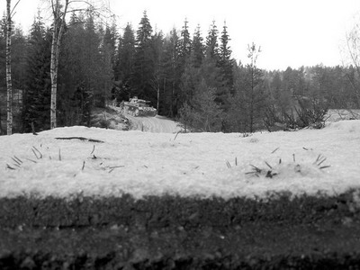
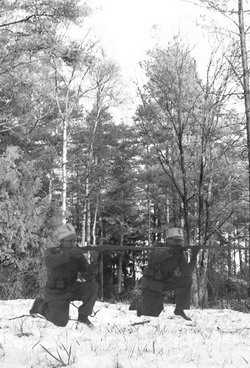

Klockan
05.30 i går morse gick tyska trupper över gränsen
och nedkämpade den första försvarslinjen. Sverige
befinner sig i krig. Från sydväst hörs kraftigt
kanonmuller och enstaka flygplan passerar på låg höjd.
I Sjöänd skans råder full beredskap. Skyttevärnen
är besatta och det hörs eldgivning från vägen
mot årjäng. Plötsligt kommer ett tiotal soldater
springande utefter vägen. "Fienden befinner sig bara
500 meter bort" rapporterar gruppchefen. Så hörs
rasslet från en stridsvagn och plötsligt kommer den
fram i vägkröken.
"Eld!"
kommenderar plutonchefen, men det blir inte mycket mer än
några spridda skott. Ingen har tidigare varit i strid och
alla är rädda och kramar sina gevär i vanmakt.
De fientliga följeinfanteristerna försvinner in i skogen,
medan stridsvagnen sakta närmar sig. Men nu har pansarvärnskanonen
kommit på plats och nästan samtidigt med stridsvagnens
första skott skjuter pv-kanonen. Luften slits sönder
av fruktansvärda krevader. Jord och stenar kastas högt
upp i luften och alla trycker sig mot marken. Stridsvagnen avancerar
långsamt men plötsligt hörs ett dån när
den kör rakt in i mineringen. Eld utbryter och besättningen
lämnar vraket förföljda av enstaka skott från
skansen. En djup tystnad utbreder sig och först nu hörs
skriket från en sårad soldat.
Tystnaden varar någon timme, men avbryts plötsligt
av granatkastareld som med en enorm kraft slår ner överallt
i skansen. Alla trycker i sina värn och det är bara
vaktposten i tornet på huvudbunkern som kan spana. Plötsligt
skriker han "fientligt infanteri rycker fram över åsen!
Besätt eldställningarna!" Fienden är redan
framme vid taggtrådshindren innan försvararnas eld
öppnas. Från kulsprutebunkern skjuts flankerande eld,
men fienden bryter ändå in i skansen från sydväst.
Snabbt samlas en stötgrupp som från bunkertaket tvingar
fienden att retirera med stora förluster. åter sänker
sig tystnaden. Manskapet i Sjöänd Skans har klarat sitt
elddop.